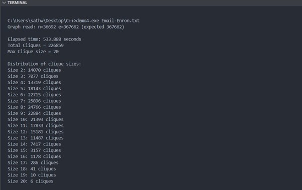
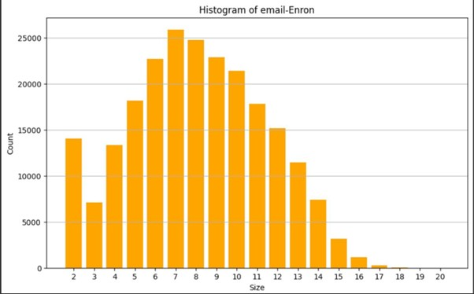
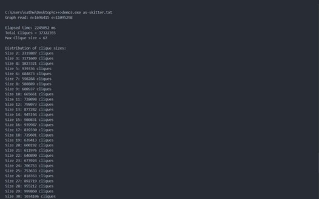
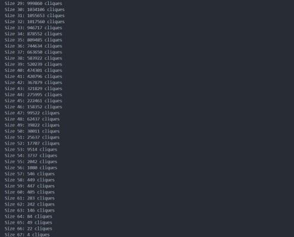
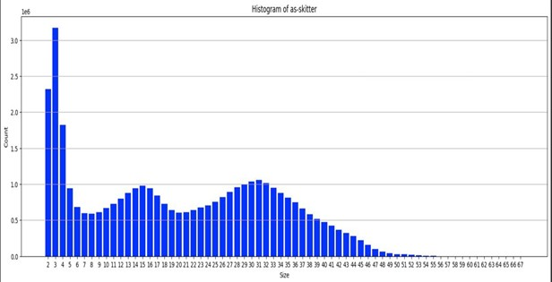
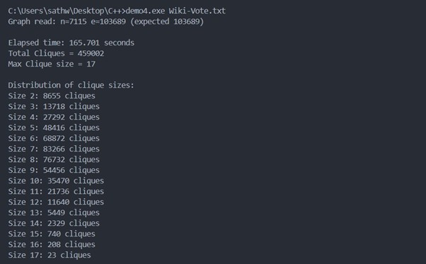
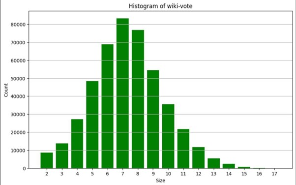

Output & Histogram Observations
(I) Output & Histogram Observation for Q1,2 & 3 on DataSet: email-Enron


(II) Output & Histogram Observation for Q1,2 & 3 on DataSet: as-Skitter



(III) Output & Histogram Observation for Q1,2 & 3 on DataSet: wiki-Vote

